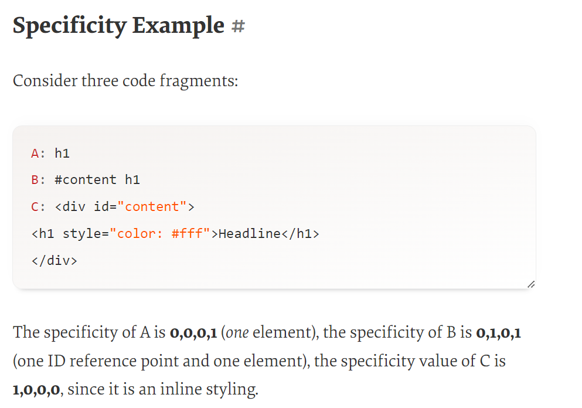

Types of selectors
1.Type, class, and ID selectors
Type: target an HTML element such as an h1 -- h1 { }--
class: selectors which target a class: -- .box { } --
an ID: -- #unique { } --
2.Attribute Selectors
These select elements based on the presence of a certain attribute on an element:
-- a[title] { } --
Or even make a selection based on the presence of an attribute with a particular value:
-- a[href="https://example.com"]{ } --
3.Pseudo-classes and pseudo-elements
These style certain states of an element. The :hover pseudo-class for example selects
an element only when it is being hovered over by the mouse pointer: -- a:hover { } -- or it is the first element of their type
Pseudo-classes are keywords that start with a colon. For example, :hover is a pseudo-class.
It also includes pseudo-elements, which select a certain part of an element rather than the element itself.
For example, -- ::first-line -- always selects the first line of text inside an element
-- p::first-line { } --
They act as if you had added a whole new HTML element into the markup(usually inside another element-before or after), rather than applying a class to existing elements.
Pseudo-elements start with a double colon ::. ::before is an example of a pseudo-element.
NOTE: pseudo element selectors help generate content via CSS by combining the content CSS property with the ::before or ::after pseudo-element. This -content- may be either plain text or a container that we manipulate with CSS to display a graphic shape or decorative element.
Most used pseudo class include
:link -
Use this class to add special style to an unvisited link.
:visited -
Use this class to add special style to a visited link.
:hover -
Use this class to add special style to an element when you mouse over it.
:active -
Use this class to add special style to an active element.
:focus -
Use this class to add special style to an element while the element has focus.
:first-child -
Use this class to add special style to an element that is the first child of some other element.
:lang -
Use this class to specify a language to use in a specified element. :nth-child,:nth-of-type(), :nth-of-type(2n+3),:empty, :not(-id/class etc-) :only-of-type, :last-of-type
Most used pseudo elements include
::after, ::before and ::first-letter,::first-line
4.Combinators
These selectors combine other selectors in order to target elements within our documents.
The following, for example, selects paragraphs that are direct children of -article-
elements using the child combinator (>): -- article > p { } --
The child combinator (>) is placed between two CSS selectors. It matches only those elements matched by the second selector that are the direct children of elements matched by the first
i. > when used = article > p { } -- select p elements that are direct children of article elements
The adjacent sibling selector (+) is placed between two CSS selectors.
It matches only those elements matched by the second selector that are the next sibling element of the first selector.
ii. + when used = p + img -- select img elements that are immediate sibling(immediate below or immediate above) elements of p elements
A common use case is to do something with a paragraph that follows a heading,
General sibling combinator is placed between two CSS selectors.
If you want to select siblings of an element even if they are not directly adjacent, then you can use the general sibling combinator (~).
iii. ~ when used = p ~ img -- select all img elements that come anywhere after p elements
It is often better to create a simple class and apply that to the element in question. That said, your knowledge of combinators will be very useful if you need to style something in your document and are unable to access the HTML, perhaps due to it being generated by a CMS.
CSS Specificity
Selector Specificity/Weight of Selectors.If two CSS selectors apply to the same element, the one with higher specificity wins.
Selectors Specificity (Weight)
0.Inline styles (Presence of style in document).
1.IDs
2.Classes, Pseudo-classes, Attributes
3.Elements, Pseudo-elements.
Specificity Overview
1. Specificity determines, which CSS rule is applied by the browsers.
2. Every selector has its place in the specificity hierarchy.
3. If two selectors apply to the same element, the one with higher specificity wins.
4. There are five distinct categories which define the specificity level of a given selector:
inline styles, IDs, classes, attributes, and elements.
5. When selectors have an equal specificity value, the latest rule is the one that counts.
v
6. When selectors have an unequal specificity value, the more specific rule is the one that counts.
7. Rules with more specific selectors have a greater specificity.
8. ID selectors have a higher specificity than attribute selectors.
9. You should always try to use IDs to increase the specificity.
10. A class selector beats any number of element selectors.
11. The universal selector and inherited selectors have a specificity of 0, 0, 0, 0.
12. You can calculate CSS specificity with CSS Specificity Calculator
CSS Specificity Calculator: How To Measure Specificity?
Memorize how to measure specificity.
Start at 0,
- add 1000 for style attribute[Inline styles (Presence of style in document).]
- add 100 for each ID,
- add 10 for each attribute, class or pseudo-class,
- add 1 for each element name or pseudo-element.
So in
body #content .data img:hover
The specificity value would be 122 (0,1,2,2 or 0122):
100 for #content, 10 for .data, 10 for :hover, 1 for body and 1 for img.” [CSS Specificity]
Alternative way:
Count the number of ID attributes in the selector (= a).
Count the number of other attributes and pseudo-classes in the selector (= b).
Count the number of element names and pseudo-elements in the selector (= c).
Concatenating the three numbers a-b-c gives the specificity.
NOTE: Specificity is shown/given out as a 4 or 3 digit value 122 (0,1,2,2 or 0122):
- In a 3 digit value, first place is id,second is class and last digit is element. 122 or 1,22
- In a 4 digit value, first place is (inline css), second is id, third is class, fourth is element. 0122 or 0,1,2,2
- * { } is 0000 and body {} is 0001
NOTE: Equal specificity: the latest rule is the one that counts.
Specificity Rules
1.ID selectors have a higher specificity than attribute selectors
2.Inline CSS beats Selectors in an external CSS file
3.A class selector beats any number of element selectors.
4.The universal selector has a specificity of 0, 0, 0, 0. *, body * and similar selectors have a zero specificity. Inherited values also have a specificity of 0, 0, 0, 0.
Specificity Example
